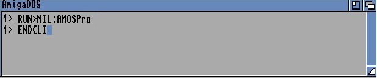

Section 13 of this User Guide is devoted to AMOS Professional Accessories. This Chapter explains how to manipulate the Configuration files to change the default settings of AMOS Professional itself. The other Chapters in this Section each deal with a specific accessory program, allowing the editing, creation or management of various AMOS Professional features.
Accessories are special utility programs that can be called up "over" another program that is being edited or tested, without disrupting anything that is "underneath". Any memory banks that are employed by the accessory program are totally independent of the main program. Existing data can be loaded from memory, disc or "grabbed" directly from other programs. Please see the BGRAB command, and the associated techniques as explained in Chapter 5.9.
When accessory programs are displayed over the current program screen, any music is suspended, and Objects are automatically removed from the screen. Your accessory program should check the suitability of the current screen during its initialisation, using the various SCREEN functions, or use the DEFAULT command to erase the existing screens altogether.
The IFF Picture Compactor accessory is detailed in Chapter 6.2, the Font Editor accessory is examined in Chapter 11.1, and the following Chapters cover the Object Editor, the Menu Editor, the Disc Manager, the AMAL Editor, the Sample Bank Maker and the Resource Creator, in that order.
The use of the [AMOS] main menu, regarding loaded accessory programs is explained in Chapter 4.1.
Additional Editor accessory programs can be defined, provided that the program to be defined as an accessory is a hidden program (with no window from the Editor), and that the program is called from the Editor via the [AMOS] main menu or via a "Program to Menu" operation.
SET ACCESSORY
instruction: define an accessory program
Set Accessory
A program becomes an accessory by the simple inclusion of a SET ACCESSORY command in its listing, preferably immediately after a SET BUFFER instruction. The new accessory has the ability to communicate with the Editor, using the following two instructions.
instruction: send instructions to the Editor from an accessory program
Call Editor function
Call Editor function,parameter,parameter$
Use this command to send instructions to the Editor. The function parameter refers to a special number, which is understood by the Editor to refer to a particular function. A list of all available functions, along with their code numbers, is featured in the [Editor] Help menu.
instruction: return parameters from the Editor to an accessory program
Ask Editor function
Ask Editor function,parameter,parameter$
AMOS Professional can be tailored to suit your own needs and preferences. There are two configuration files which make this possible:
AMOSPro.Interpreter_Config
The Interpreter configuration file relates to a large selection of features, such as the maximum
number of Bobs, copper lists, the File Selector, and so on. Hard disc and floppy disc users must
ensure that it is located in the S: folder, ensuring that the main configuration file can be found
anywhere in the system.
AMOSPro.Editor_Config
The Editor configuration file concerns the appearance and contents of screens, menus and
messages.
There are two programs available to set these configurations, appropriately named "Interpreter_Config.AMOS" and "Editor_Config.AMOS". The Interpreter configuration program is stand-alone, and can be loaded and run independently, or called automatically via the [Set Interpreter] option in the [Config] menu. The Editor configuration program can only be called from the [Config] sub-menu.
Before continuing, be warned that making random changes to the AMOS Professional configurations can be a dangerous pass-time. Be sure you fully understand the implications of changing the default settings before experimenting. In actual fact, changing the configuration is quite simple and straightforward.
The options in the [Config] menu were outlined in Chapter 4.1. All of the configuration settings available via the [Set Editor] and [Set Interpreter] options will now be examined in detail.
From the main [Config] menu, select the [Set Editor] option. The Editor_Config.AMOS program can only be called from this sub-menu option, and a requester will be displayed if you attempt to run it independently.
All loading and saving of the Editor configuration must be performed under the control of the Editor, because the Editor configuration program only affects the configuration within the Editor's data zone.
When the Editor configuration program is called, you can perform any required changes. The results of the new configuration can be seen as soon as you return to the Editor. When the [Set Editor] option is touched by the mouse pointer, a sub-menu is displayed, offering the following selection:
[Editor Set-up]
When this heading is selected, a simple full-screen dialogue box appears, allowing a range of
default settings to be changed. These are listed next.
[Make backups of AMOS Programs?] If set to [Yes], AMOS Professional will rename the disc file from "name.AMOS" to "name.bak", and then save out the file as "name.AMOS"
[Editor Screen Interlaced?] Similarly, you can toggle the default setting from [No] to [Yes] and engage the interlace function, which gives double-height resolution.
[Set Editor Screen] A new working screen is displayed, allowing you to set the position and size of the Edit Window. Position and size buttons are available at the top of the screen, and when one of these is triggered, the active grid can be manipulated by the mouse. Screen coordinates are displayed automatically.
Click on [Pos] to activate screen positioning, and then click somewhere in the screen grid to set the new position. Similarly, click the [Size] button before setting the size of the screen in the grid.
An opening speed slider is also available, at the top of the screen. [Op. Speed] is used to set the number of pixels per Vbl. For example, an opening speed screen setting of 2 pixels for a screen height of 200 will take two seconds to open.
After the new settings have been made, simply click on the [Exit] button.
[Maximum number of UNDO movements] AMOS Professional will only remember (store) the number of Undo events that are specified here.
[Undo buffer maximum length (K.bytes)] Drag the slider or click for single increments or decrements, one kilobyte at a time, ranging from zero to 256k. If your Undo events reach this buffer limit, the first stored events will be lost.
Block Undo procedures may need big chunks of memory, so don't reduce this buffer too low if you want a decent block editing facility.
[Direct Mode History, number of commands saved] The default setting of being able to recall 20 previous Direct Mode commands can be changed to a number from zero to 128, using the slider bar.
[Set Editor Files] This option allows you to rename system files that AMOS Professional is seeking, and should be used with caution.
[Colour Palette]
This option allows the default colours used by the Edit window, Direct Mode window, and so
on, to be changed.
After choosing which window colours are to be affected, select the current colour to be changed using the mouse, and use the RGB sliders to adjust colours to your own preferences.
[Menu Messages]
Any string can be changed for any of the existing menu messages. This may be necessary if you
wish to translate the English wordings into another language, or adapt the existing menus to
your own preferences. Simply use the slider to display the range of default messages, click on
the one that is to be changed, and type in your new string of characters. The string will be set to
the correct length automatically, or spaces will be added to pad the string to fit the existing size
of the menu item.
[Dialog messages]
Similarly, this option summons up every one of the system's dialogue messages, ready for
modification. Please see Chapter 13.7 for a comprehensive guide to the Interface Resource
Editor.
[Test-Time Messages]
[Run-Time Messages]
The last two options in the [Editor set-up] menu operate in exactly the same way as the [Menu
Messages] option. Error messages are examined in Chapter 12.3.
The stand-alone Interpreter_Config.AMOS program can be called from the [Config] main menu, by selecting the [Set Interpreter] option. This program is an accessory, so the Edit Screen is not erased, but remains underneath.
Here is a list of the options available in the Interpreter Configuration menu, called by [Set Interpreter].
[Load Default Configuration]
This loads the existing configuration file from the APSystem folder, found on the
AMOSPro_System disc.
[Load Other Configuration]
A File Selector is displayed, inviting you to choose an Interpreter_Config file. It is perfectly
acceptable to have several such files on your start-up disc. All configurations should be kept in
the APSystem folder, and assigned individual names.
[Save Configuration]
This saves the current configuration settings onto the program disc. These settings will be
installed in memory whenever AMOS Professional is loaded. Never change the configuration of
your original AMOSPro_System disc!
[Save Configuration As]
Use this option to store the new configuration settings as a separate file, leaving the current
configuration unchanged.
[Set Loaded Extensions]
Whenever a new extension file is added to the system, AMOS Professional must be informed of
its exact location on the disc. This is achieved via the extension list, and you should move the
cursor over the appropriate position, and click on the left mouse button. Enter the path and file
names of the extension from the keyboard, and press [Return].
[Set System Configuration Page 1]
When this option or the following [Set System Configuration Page 2] option is selected, a
selection of configuration features is presented, ready to be set to your own preferences.
[Printer]
This offers a simple toggle to disable the default setting of a carriage return with a line feed.
[Close Workbench on loading]
This option tells AMOS Professional to attempt to close the Workbench after it is loaded. Please
see CLOSE WORKBENCH and CLOSE EDITOR below.
[Allow "Close Workbench" to work]
If this setting is toggled to [No], then the CLOSE WORKBENCH command will have no effect in
a program. If there is sufficient available memory, you can prevent programs from affecting
your Workbench in this way.
[Allow "Close Editor" to work]
Similarly, the CLOSE EDITOR command can be permitted or made ineffective. CLOSE EDITOR
will only close the main Editor screens and remove the immediate editing buffers, gaining about
64k of memory.
[Allow "Kill Editor" to work]
The KILL EDITOR command is explained at the beginning of Appendix B, and it is used to
remove the entire Editor. This frees up the whole of the memory space allocated to the Editor,
which is re-loaded when the program is over.
[Save Icons]
If set to [Yes], "info" files will be saved along with any program saved via the [Project] menu.
[File Selector: Sort, Files?]
If set to [Yes], files will be sorted as they are read from the current path name.
[File Selector: Display File Size?]
The size of files can be removed from the File Selector display, revealing
[File Selector: Store Directories?]
You can choose if the File Selector is to remember (store) the five most recent directories that
you viewed, when using it.
[Set Text Reader screen]
A working screen is summoned as for the [Set Editor Screen] option. Please refer above for
details.
[Set File Selector screen]
Similarly, you are able to change the default settings for the File Selector screen, using this
option. You are warned that bigger screens consume more memory!
[Set System Configuration Page 2]
Here is a list of the options called up when this item is selected. The first five of these options are
all operated by slider bars.
[Maximum number of Bobs]
This number can be set from a maximum of 256, down to eight. Please refer to Chapter 7.2 for a
full discussion of Blitter Objects.
[Maximum Height of Sprites]
The maximum height of Sprites can be set from 16 Raster lines up to 312. Please see Chapter 7.1
for details.
[Copper List Buffer size (K.Bytes)]
The available allocation ranges from 2k up to 32k. Full details of the Copper list are given in
Appendix F.
[Variable Name Buffer size (K.Bytes)]
This can be set in the range from 1k up to 32k.
[Default Text Buffer size (K.Bytes)]
The allocation for the text buffer may be set from 1k, all the way up to 512k. There is also a [Set
Text buffer] option available from the [Editor] main menu.
[Default printer port]
[Default serial port]
Click on the [Prt:] or [Aux:] panel, and type in your preferences from the keyboard, then press
[Return].
When you have selected your new preferences, and quit these menus, a dialogue box will appear regarding saving and re-booting.
If your system uses an external 3.5-inch disc drive, approximately 30k of memory can be saved by deactivating it before switching on and loading AMOS Professional.
Turning off this drive while the Amiga is operating will have no effect at all, because the memory is allocated to the external drive as part of the start-up sequence.
Two powerful instructions are provided that allow you to maximise the available memory for your programs.
instruction: close the Workbench
Close Workbench
This command closes the Workbench screen, saving about 40k of memory, and freeing it for your own programs! Prove this now, as follows:
E> Print Chip Free, Fast free Close Workbench Print Chip Free, Fast Free
CLOSE WORKBENCH can be executed from inside an AMOS Professional program, or from Direct Mode, but it will not work if there is a CLI window opened. To solve this problem, ensure that AMOS Professional loads using the following CLI instruction:
instruction: close the AMOS Professional Editor Window
Close Editor
To save more than 28k of memory, use the CLOSE EDITOR command in an AMOS Professional program. The program listing will be completely unaffected. If there is insufficient memory to re-open the Editor Window after the program has finished, AMOS Professional will automatically erase the current display and revert to the standard default screen. Simply press [Esc] to summon up the Editor as usual!